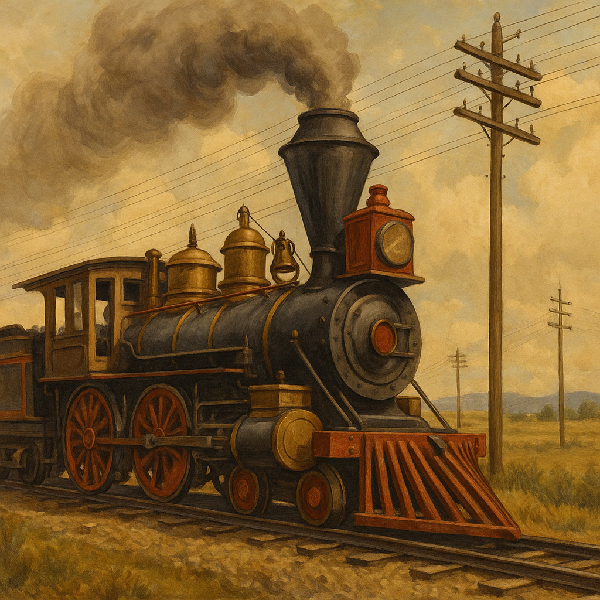

Technological innovations transformed railroads into engines of national unification, reshaping commerce, safety, and the American landscape.
The technological evolution of the railroad industry during the 19th century marked a pivotal transformation in how Americans traveled, traded, and lived. The development of iron and later steel rails drastically improved track durability, reducing accidents and maintenance costs. Innovations like the Janney coupler eliminated the dangerous task of manually linking train cars, protecting the lives of countless workers. Meanwhile, the adoption of standard gauge tracks ensured smoother, more consistent travel across vast regions, enabling more efficient nationwide commerce.1 This further demonstrates the lasting importance of railroads in shaping America's development and its broader economic landscape. These technological and regulatory advancements had far-reaching implications not only for the growth of the railroad industry, but also for American society, economy, and labor dynamics as a whole. They represent the intersection of industrial ambition and national progress during a pivotal era of expansion.
One of the most groundbreaking innovations was the invention of the Westinghouse air brake system in 1869. Before its introduction, trains relied on manual braking systems, requiring brakemen to risk life and limb climbing atop moving trains. Westinghouse’s technology allowed engineers to stop entire trains using a centralized pneumatic system, increasing both safety and efficiency across the rail network.2 This single advancement enabled longer and heavier trains, transforming freight and passenger transport alike. This further demonstrates the lasting importance of railroads in shaping America's development and its broader economic landscape. These technological and regulatory advancements had far-reaching implications not only for the growth of the railroad industry, but also for American society, economy, and labor dynamics as a whole. They represent the intersection of industrial ambition and national progress during a pivotal era of expansion.
Railroads also integrated the telegraph to coordinate train movements and schedules. With dispatchers now able to communicate in real time, scheduling became more precise, reducing collisions and delays. These innovations did not merely change railroads—they redefined the tempo and rhythm of American life. This further demonstrates the lasting importance of railroads in shaping America's development and its broader economic landscape. These technological and regulatory advancements had far-reaching implications not only for the growth of the railroad industry, but also for American society, economy, and labor dynamics as a whole. They represent the intersection of industrial ambition and national progress during a pivotal era of expansion.
- Fogel, Robert William. Railroads and American Economic Growth. Johns Hopkins University Press, 1964. https://archive.org/details/railroadsamerica00foge
- Westinghouse, George. Improved Air Brake System Patent. U.S. Patent 88,929, 1869. https://patents.google.com/patent/US88929A/en
These advancements not only changed the technical capabilities of trains but redefined how Americans thought about speed, distance, and economic potential.
These advancements not only changed the technical capabilities of trains but redefined how Americans thought about speed, distance, and economic potential.